Project 2
Part 1: Fun with Filters
Part 1.1: Convolutions from scratch
I started by looking at the normal applying of padding and kernels. I noticed that padding uses a single number to pad on both sides, and I made the assumption that you pad both sides equally. Although I did some research and see this is not always the case, as in some cases, for example, causal convolutional layers, the padding could be different, and below is my padding function.
def pad_same(image, kernel_h, kernel_w):
image_h, image_w = image.shape
top, left = kernel_h // 2, kernel_w // 2
padded = np.zeros((image_h + kernel_h - 1, image_w + kernel_w - 1))
padded[top:top + image_h, left:left + image_w] = image
return paddedThen I also had a conv2d for both four loops and two loops, and here I only showed the two loops function, which is what I used later on too. It basically takes a kernel and puts it across the image.
def conv2d_two(image, kernel):
image_h, image_w = image.shape
kernel_h, kernel_w = kernel.shape
padded = pad_same(image, kernel_h, kernel_w)
flipped = kernel[::-1, ::-1]
out = np.zeros((image_h, image_w))
for i in range(image_h):
for j in range(image_w):
out[i, j] = np.sum(padded[i:i + kernel_h, j:j + kernel_w] * flipped)
return outComparison with scipy

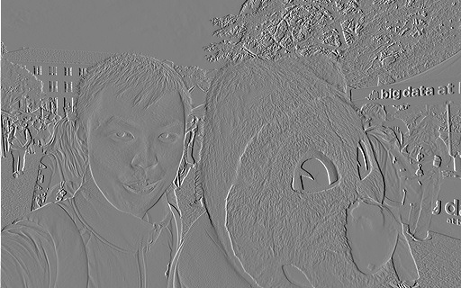
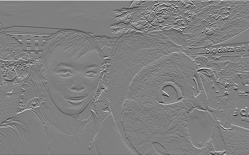
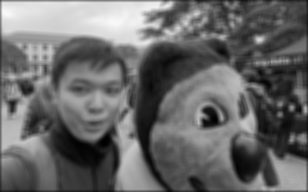


Both pad the boundary with zeros, and the results match scipy.signal.convolve2d to within 1e-15. On a 100x100 image with the 9x9 box filter, four loops took about 130 ms, two loops about 20 ms, and scipy under 1 ms, because each step moves more of the looping from Python into compiled code.
Part 1.2: Finite difference operator
The derivative in x uses the kernel Dx = [1, -1] and the derivative in y uses Dy = [1, -1]T. The gradient magnitude is sqrt(dx2 + dy2).
Dx = np.array([[1.0, -1.0]])
Dy = np.array([[1.0], [-1.0]])
def finite_difference(im, threshold, filter_x=Dx, filter_y=Dy):
dx = convolve2d(im, filter_x, mode='same', boundary='symm')
dy = convolve2d(im, filter_y, mode='same', boundary='symm')
magnitude = np.sqrt(dx**2 + dy**2)
edges = magnitude > threshold
return dx, dy, magnitude, edges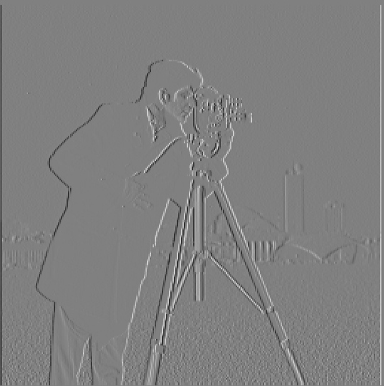
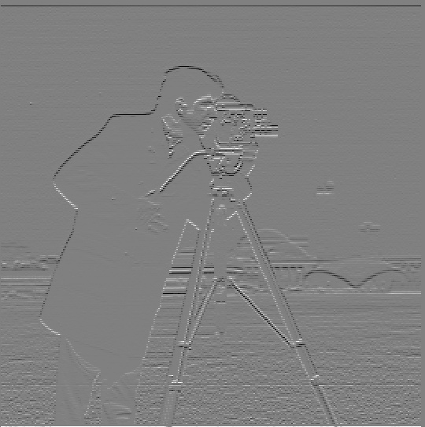
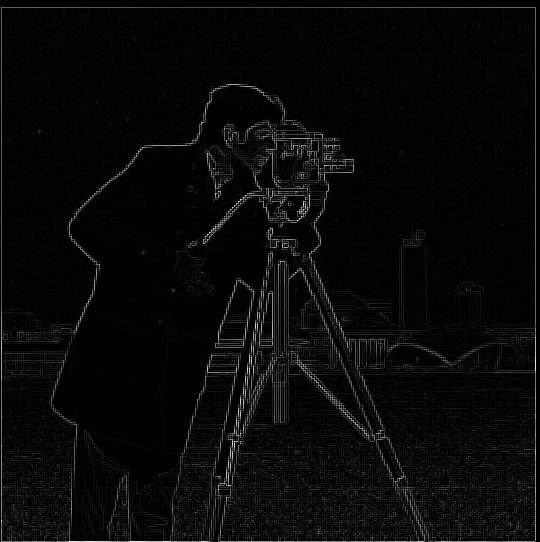
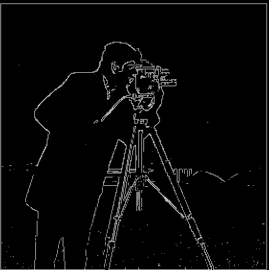
I binarized the gradient magnitude at a threshold of 0.25. A lower threshold keeps more of the background buildings but lets in the grass noise, so I gave up a few faint edges for a cleaner image.
Part 1.3: Derivative of Gaussian (DoG) filter
I believe the whole point of this is to use the property of convolutions, that order doesn't really matter. And thus, you can apply the flatten and filter operations sequentially, or you can even convolve them together to have a composite function that has the same effect. Below, I try to demonstrate this.
The 2D Gaussian is the outer product of cv2.getGaussianKernel with itself (9x9, sigma 1.5). I blur the image with it and then repeat Part 1.2.
def gaussian_2d(ksize, sigma):
g = cv.getGaussianKernel(ksize, sigma)
return g @ g.T
def blur_then_difference(im, gaussian, threshold):
blurred = convolve2d(im, gaussian, mode='same', boundary='symm')
return finite_difference(blurred, threshold)

Compared to the plain finite difference, the grass noise is gone and the edges are thicker and continuous. Blurring makes the gradients smaller, so the threshold drops to 0.075.
DoG filters
Convolving the Gaussian with Dx and Dy gives two DoG filters, so the blur and the derivative become one convolution.
def dog_filters(gaussian):
return convolve2d(gaussian, Dx), convolve2d(gaussian, Dy)
def dog_difference(im, gaussian, threshold):
dog_x, dog_y = dog_filters(gaussian)
return finite_difference(im, threshold, dog_x, dog_y)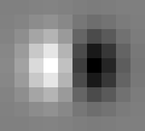
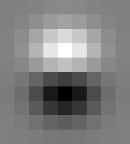
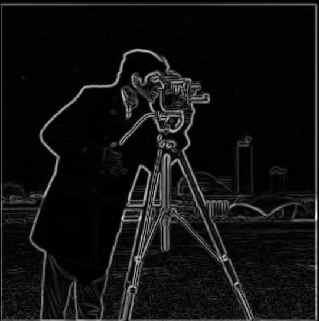
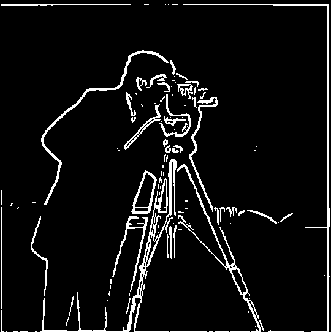
The result is the same as blurring first: the gradient magnitudes differ by at most 7e-16 and the edge images are identical.
Bells & Whistles: gradient orientation
The gradient divided by its magnitude is already the cosine and sine of the orientation, so no angle function is needed. Each color channel is a cosine of the orientation shifted by 120 degrees, expanded with cos(a - b) = cos a cos b + sin a sin b, and the brightness is the gradient magnitude.
def orientation(dx, dy, magnitude):
cos, sin = dx / (magnitude + 1e-8), dy / (magnitude + 1e-8)
half, root = 0.5, np.sqrt(3) / 2
rgb = np.dstack([cos, -half * cos + root * sin, -half * cos - root * sin])
return (0.5 + 0.5 * rgb) * normalize(magnitude)[:, :, None]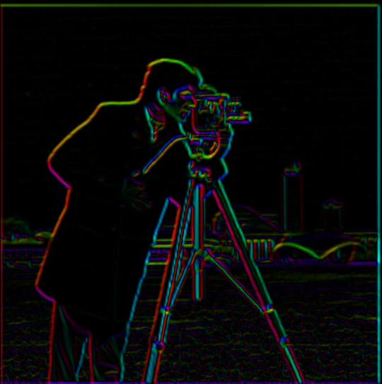
Part 2: Fun with Frequencies
Part 2.1: Image sharpening
A Gaussian blur keeps only the low frequencies, so the image minus its blur is the high frequencies. Adding alpha times the high frequencies back sharpens the image, and this folds into a single filter: (1 + alpha) * impulse - alpha * Gaussian.
I also find out that sharpen and blur are not reverses of each other. So sharpen is not gonna cancel blurring. It's gonna try to "use what is left" with its best ability.
def unsharp_filter(sigma, alpha):
ksize = kernel_size(sigma)
impulse = np.zeros((ksize, ksize))
impulse[ksize // 2, ksize // 2] = 1
return (1 + alpha) * impulse - alpha * gaussian_2d(ksize, sigma)
def sharpen(im, sigma, alpha):
return np.clip(filter_image(im, unsharp_filter(sigma, alpha)), 0, 1)
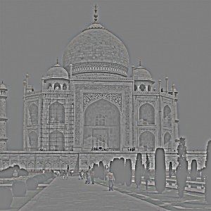
Taj sharpens well, the edges of the building come out clearly.
I'm also interested to discover what happens if we try to sharpen an image that is already kind of blurry, for instance, this motion blur image.
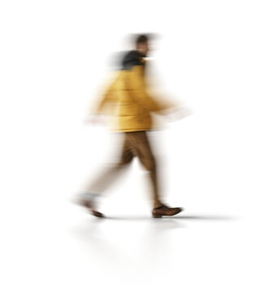
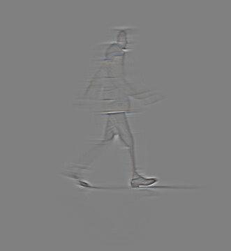
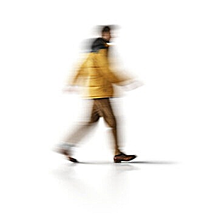
The result is sharpened, but doesn't totally sharpen. The shoes and the outline of the jacket get crisper, but the smear behind the walker is still there, because the unsharp mask only boosts the high frequencies that are left and cannot undo motion blur.
Varying the sharpening amount
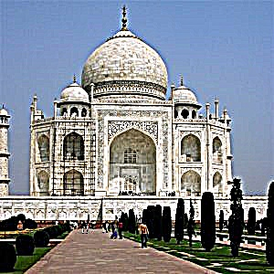
A larger alpha gives stronger edges. Past about 2, halos and noise start to show.
Blur, then sharpen
I also decided to sharpen Evanbot.
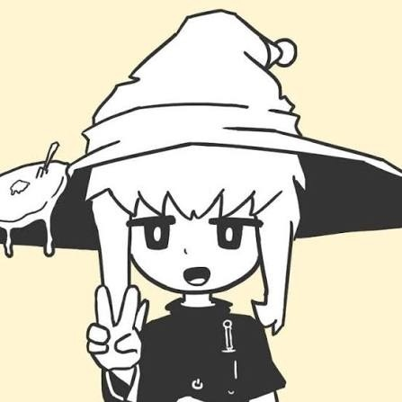
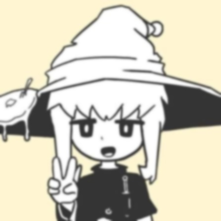
Part 2.2: Hybrid images
I align the two images on two points, low-pass one with a Gaussian, high-pass the other by subtracting its Gaussian blur, and add them.
def align(im, target, pts, target_pts):
(x1, y1), (x2, y2) = pts
(u1, v1), (u2, v2) = target_pts
scale = np.hypot(u2 - u1, v2 - v1) / np.hypot(x2 - x1, y2 - y1)
angle = np.degrees(np.arctan2(y2 - y1, x2 - x1) - np.arctan2(v2 - v1, u2 - u1))
matrix = cv.getRotationMatrix2D((x1, y1), angle, scale)
matrix[:, 2] += (u1 - x1, v1 - y1)
h, w = target.shape[:2]
return cv.warpAffine(im, matrix, (w, h), borderMode=cv.BORDER_REFLECT)
def hybrid(im_low, im_high, sigma_low, sigma_high):
return np.clip(low_pass(im_low, sigma_low) + high_pass(im_high, sigma_high), 0, 1)Derek and Nutmeg
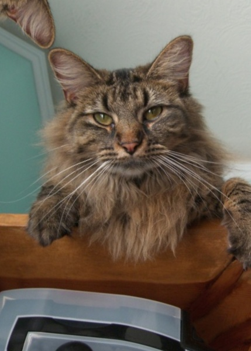
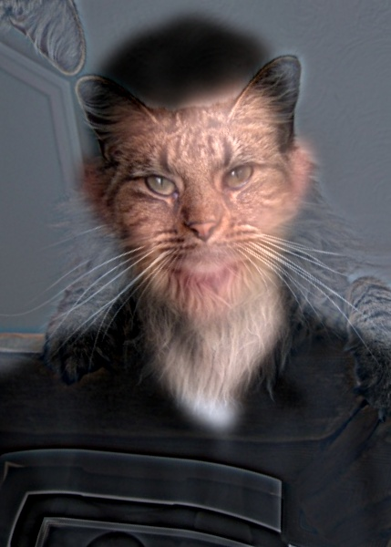
Messi and Ronaldo
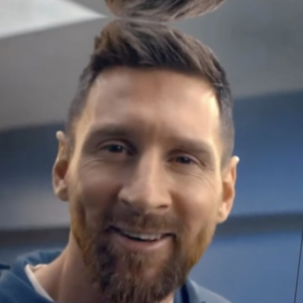

Anthropic and ChatGPT logos
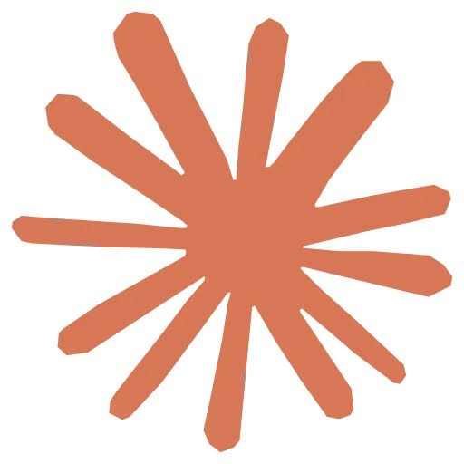
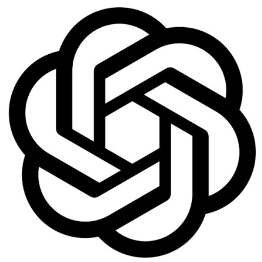
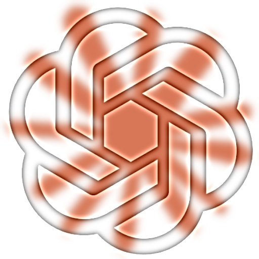
Full process: lily pond
The photo is the low-frequency image and the painting is the high-frequency one. I aligned them on the two ends of the bridge.
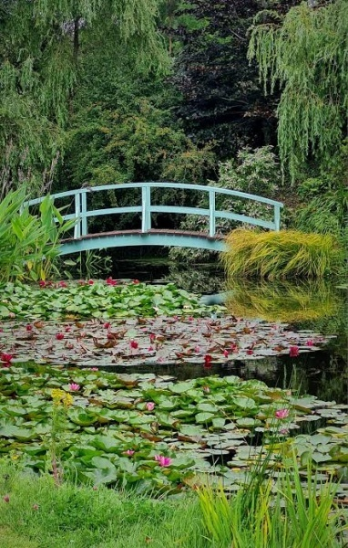


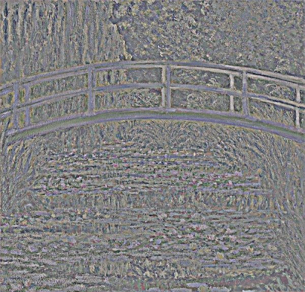
I used sigma 8 for the low-pass, enough to remove the fine detail of the photo, and sigma 5 for the high-pass, so the painting keeps its brush strokes but not its large shapes.
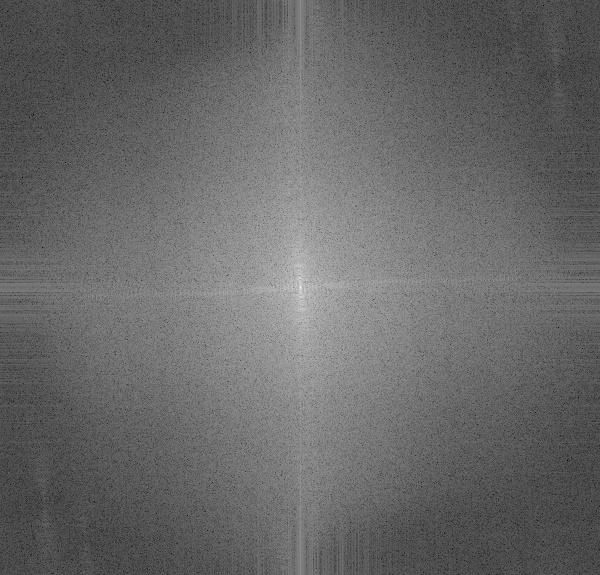
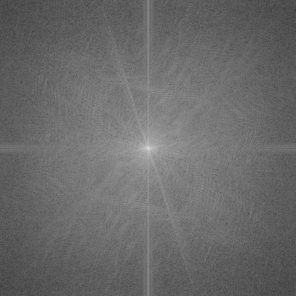
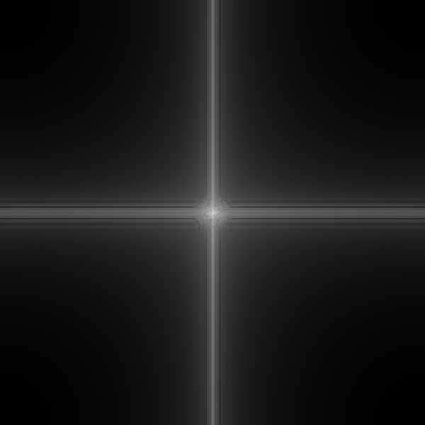
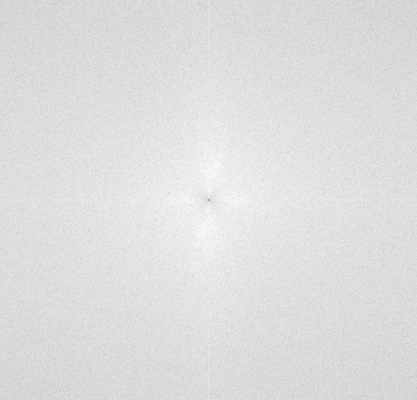
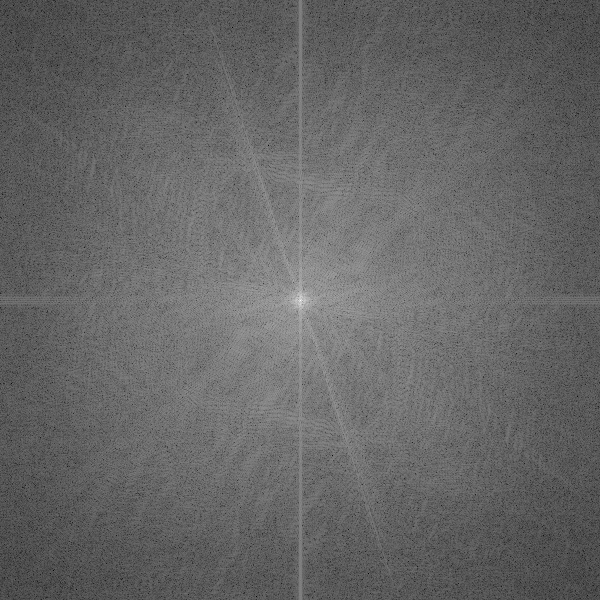
The low-pass keeps only the center of the spectrum, the high-pass removes the center, and the hybrid has both.
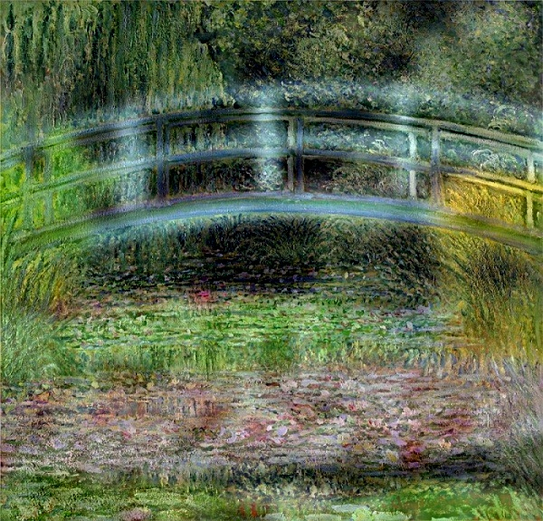
Part 2.3: Gaussian and Laplacian stacks
Each Gaussian level blurs the previous one, with sigma doubling each time and no downsampling. Each Laplacian level is the difference of two neighboring Gaussian levels, and the last one is the final Gaussian level, so the stack sums back to the image.
def gaussian_stack(im, levels, sigma=1.0):
stack = [im]
for i in range(levels - 1):
stack.append(blur(stack[-1], sigma * 2**i))
return stack
def laplacian_stack(im, levels, sigma=1.0):
g = gaussian_stack(im, levels, sigma)
return [g[i] - g[i + 1] for i in range(levels - 1)] + [g[-1]]Apple
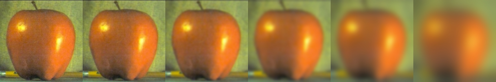
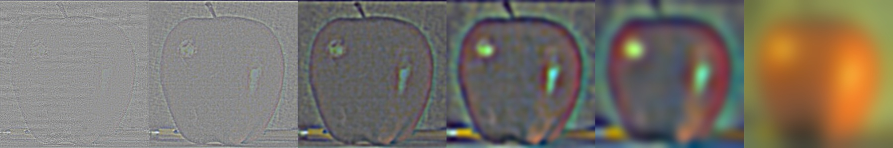
Orange
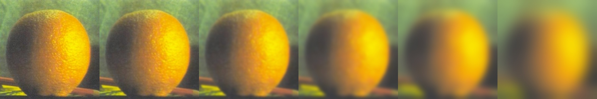
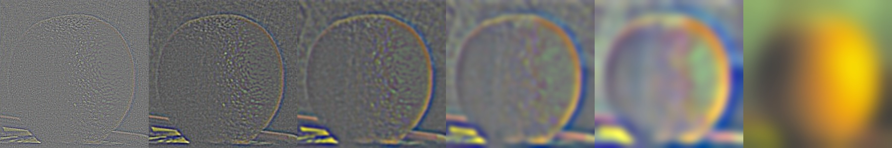
Recreating Szeliski Figure 3.42
Rows are Laplacian levels 0, 2 and 4, then the sum of all levels. Columns are the masked apple, the masked orange, and their sum.
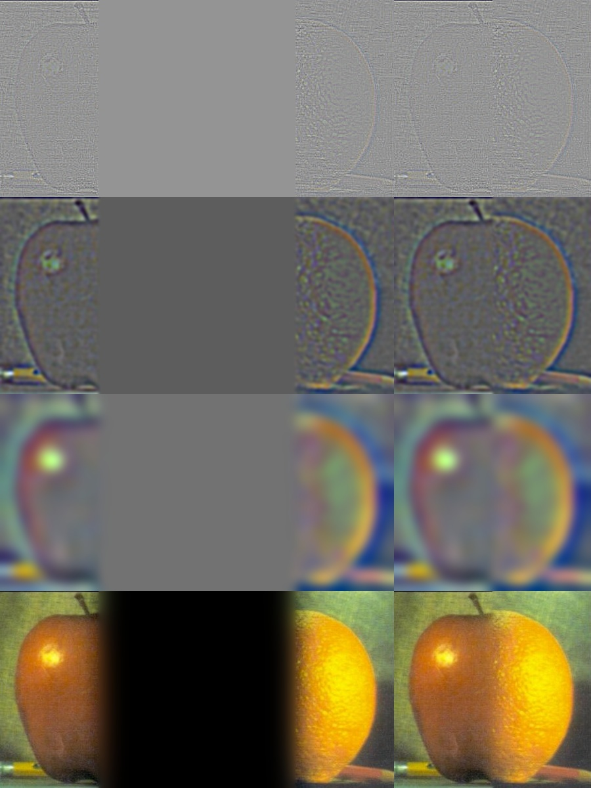
Part 2.4: Multiresolution blending
This is a very interesting problem. I think it is connected to an interesting way of mixing information: we mix at different abstraction scales and gradually add the information back. Because adding all the Laplacian levels recovers the whole image, we can mix at each scale and then add the scales up to gradually recover the mixed image. So the mixing is more gentle than one direct mix of the whole image. In other words, we mix at different frequency scales.
I build Laplacian stacks of both images and a Gaussian stack of the mask, blend each level as mask * A + (1 - mask) * B, and sum the levels. All blends are done in color, one channel at a time.
def blend_levels(a, b, mask, levels):
la, lb = laplacian_stack(a, levels), laplacian_stack(b, levels)
gm = [m[:, :, None] for m in gaussian_stack(mask, levels)]
left = [gm[i] * la[i] for i in range(levels)]
right = [(1 - gm[i]) * lb[i] for i in range(levels)]
return left, right, [left[i] + right[i] for i in range(levels)]
def blend(a, b, mask, levels=6):
return np.clip(sum(blend_levels(a, b, mask, levels)[2]), 0, 1)The oraple
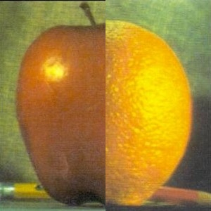
Irregular mask

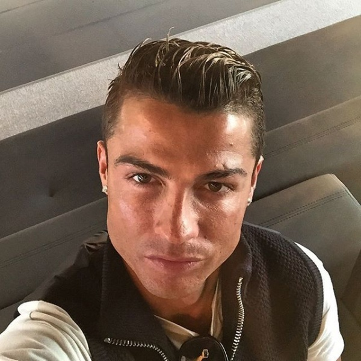
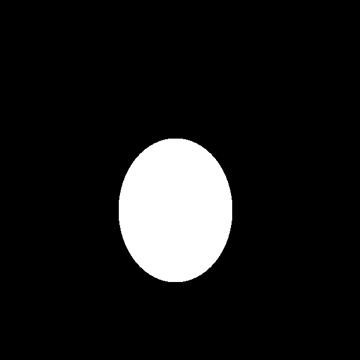
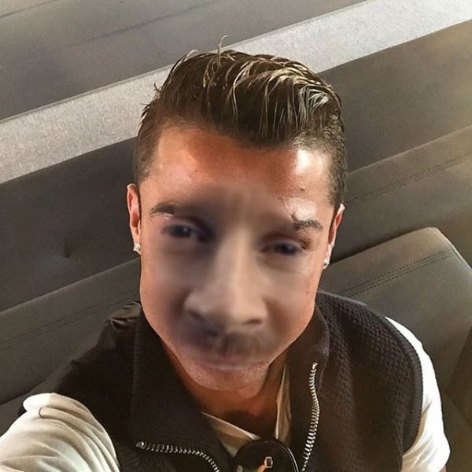
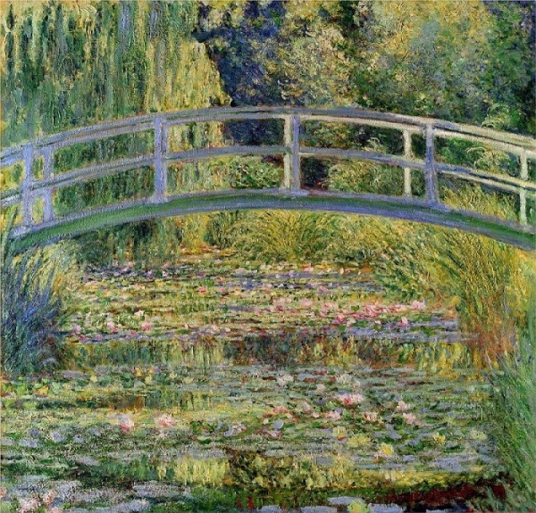
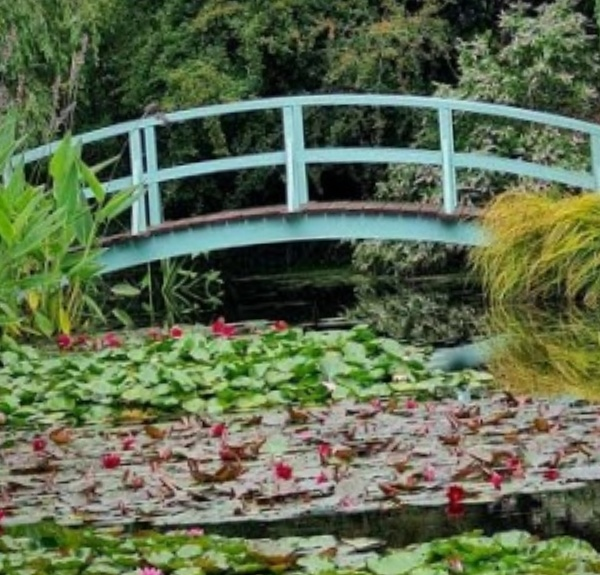
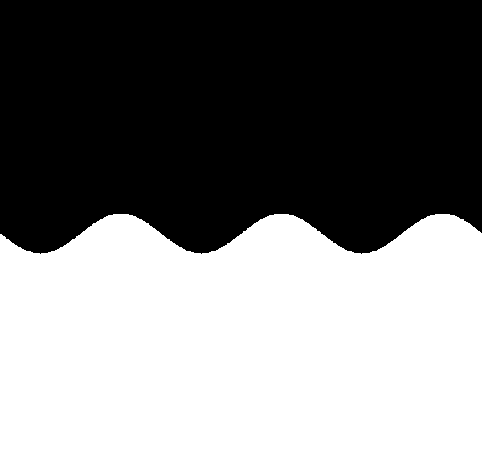
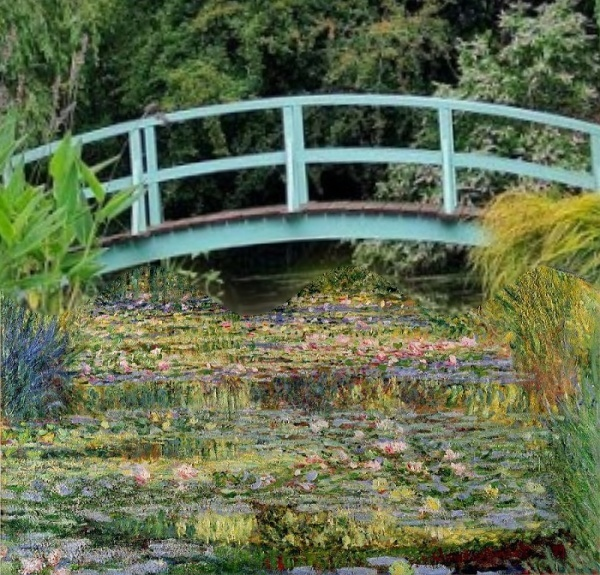
I think it's much harder to mix human faces, especially in this case, because they're not directly aligned. While in the lily pond, the two pictures are much more aligned, so the mask is easier to design.
The blending process
Rows are Laplacian levels 0, 2 and 4, then the sum of all levels. Columns are the masked painting, the masked photo, and their sum.
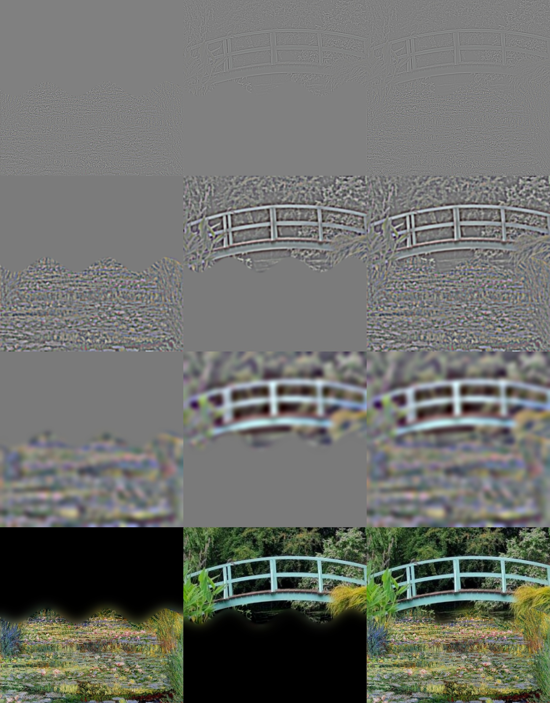
What I learned
The most important thing I learned is that an image can be split into frequency bands, and that sharpening, hybrid images and blending are all the same idea of treating those bands differently.